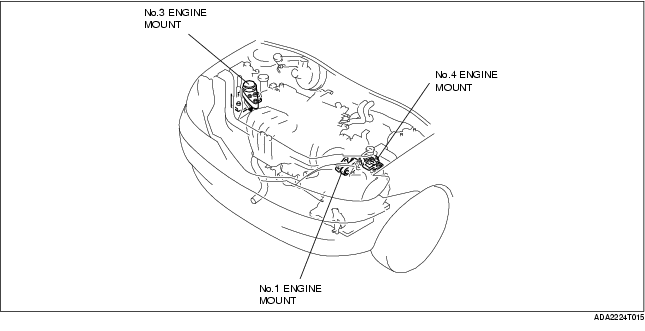

Engine mount outline [ZY]
• The pendulum-type layout of the engine mounting reduces noise in the cabin.
• The engine is supported at three points, and simplification of engine mount components has been attained.
• An oil-filled No.3 engine mount rubber has been adopted to reduce noise in the cabin.
• The exterior frame of the No. 3 and No. 1 engine mounts are made of aluminum alloy for weight reduction and reduced vibration from the engine.
• The installation structure of the No. 4 engine mount has been simplified for serviceability improvement.
